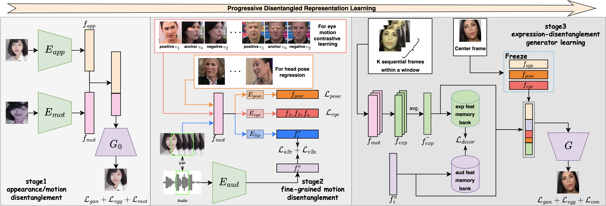
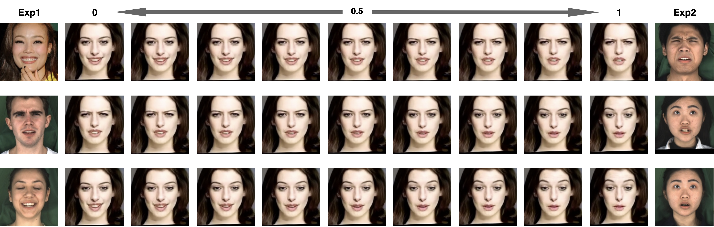

PD-FGC: Progressive Disentangled Representation Learning for Fine-Grained Controllable Talking Head Synthesis

Our method takes an appearance reference as input and generates its talking head with disentangled control over lip motion, head pose, eye gaze\&blink, and emotional expression, where the driving signal of lip motion comes from speech audio, and all other motions are controlled by different videos. As shown, it well disentangles all motion factors and achieves precise control over individual motion.
Abstract
We present a novel one-shot talking head synthesis method that achieves disentangled and fine-grained control over lip motion, eye gaze&blink, head pose, and emotional expression. We represent different motions via disentangled latent representations and leverage an image generator to synthesize talking heads from them. To effectively disentangle each motion factor, we propose a progressive disentangled representation learning strategy by separating the factors in a coarse-to-fine manner, where we first extract unified motion feature from the driving signal, and then isolate each fine-grained motion from the unified feature. We introduce motion-specific contrastive learning and regressing for non-emotional motions, and feature-level decorrelation and self-reconstruction for emotional expression, to fully utilize the inherent properties of each motion factor in unstructured video data to achieve disentanglement. Experiments show that our method provides high quality speech&lip-motion synchronization along with precise and disentangled control over multiple extra facial motions, which can hardly be achieved by previous methods.
Video
Overview

The overview of our method. We achieve factor disentanglement for different facial motions via a progressive disentangled representation learning strategy. We first disentangle appearance with all facial motions to obtain a unified motion feature for further fine-grained disentanglement. Then, we separate each fine-grained motion feature from the unified motion feature via motion-specific contrastive learning and the help of a 3D prior model. Finally, we disentangle expression with other motions by feature-level decorrelation and simultaneously learn an image generator for controllable talking head synthesis.
Generation Results
PD-FGC is able to generate talking head with accurate lip motion. Moreover, it allows fine-grained controllable over facial motion, including head pose, eye blink & gaze and emotional expression. All controllable properties are disentangled with each ohter, which means we can easily combine different properties from different sources into a novel video.
PD-FGC achieves the accurate lip motion, eye blink & gaze, emotional expression control as well as head pose compared with other methods.
Disentangled Control
PD-FGC allows disentangled control over different facial properties. In addition to combine different properties into a novel video, it can also drive one specific properties while leave others unchanged or set them to canonical pose.

Expression Interpolation
PD-FGC can smoothly transfer between two different expres- sions. The synthesized images at interpolated points also have natural expressions. This indicates that our method learns a reasonable expression latent space that supports continuous expression control
Citation
@article{wang2022pdfgc,
title={Progressive Disentangled Representation Learning for Fine-Grained Controllable Talking Head Synthesis},
author={Wang, Duomin and Deng, Yu and Yin, Zixin and Shum, Heung-Yeung and Wang, Baoyuan},
journal={arXiv:2211.14506},
year={2022}
}